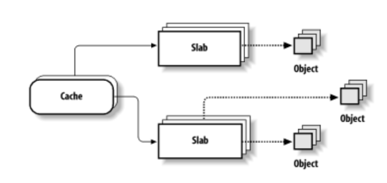
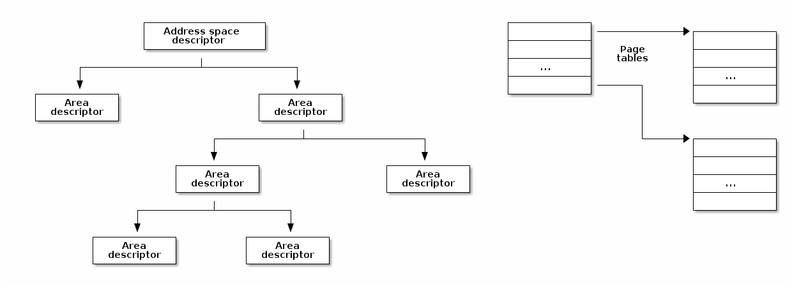

内存管理¶
课程目标：¶
- 物理内存管理
- 页面分配
- 小型分配
- 虚拟内存管理
- 缺页错误处理概述
物理内存管理¶
- 跟踪物理内存页面的算法和数据结构
- 独立于虚拟内存管理
- 完整的内存管理同时需要虚拟内存管理和物理内存管理
- 物理页面使用特殊的数据结构进行跟踪：
struct page - 每个物理页面都在
mem_map向量中保留有一个条目 - 物理页面的状态可能包括：页面使用计数器，位于交换区（swap）或文件中的位置，该页面的缓冲区，页面缓存（page cache）中的位置等。
内存区域¶
- DMA 区域
- DMA32 区域
- 正常区域（LowMem）
- 高内存区域（HighMem）
- 可移动区域（Movable Zone）
非均匀内存访问¶
- 物理内存被分割成多个节点（node），每个 CPU 对应一个节点
- 每个节点都可以访问单个物理地址空间
- 访问本地内存更快
- 每个节点维护自己的内存区域（例如 DMA、NORMAL、HIGHMEM 等）
页面分配¶
/* 分配 2^order 个连续页面，并返回指针，指针指向第一个页面的描述符 */
struct page *alloc_pages(gfp_mask, order);
/* 分配单个页面 */
struct page *alloc_page(gfp_mask);
/* 返回内核虚拟地址的辅助函数 */
void *__get_free_pages(gfp_mask, order);
void *__get_free_page(gfp_mask);
void *__get_zero_page(gfp_mask);
void *__get_dma_pages(gfp_mask, order);
- 典型的内存分配算法具有线性复杂度
- 为什么不使用分页？
- 有时我们确实需要连续的内存分配（用于 DMA）
- 分配将需要页表更改和 TLB 刷新
- 无法使用扩展页面
- 一些体系结构直接（在硬件中）线性映射地址空间的一部分（例如 MIPS）
- 空闲块被分布在多个列表中
- 每个列表包含相同大小的块
- 块的大小是 2 的幂次
- 如果 N 大小的列表中存在空闲块，选择第一个
- 如果没有，在 2N 大小的列表中查找空闲块
- 将 2N 大小的块分割为两个 N 大小的块，并将它们添加到 N 大小的列表中
- 现在我们 N 大小的列表里有内容了，从该列表中选择第一个空闲块
- 如果“伙伴”是空闲的，则合并为一个 2N 大小的块
- 循环往复直到无法找到空闲的伙伴块，并将结果块放置在相应的列表中
Linux 的实现¶
- 为 1、2、4、8、16、32、64、128、256、512 以及 1024 页面大小的块总共设置 11 个列表，每个列表对应某个大小的块。
- 每个内存区域都有自己的伙伴分配器
- 每个区域都有一个用于空闲块的描述符向量，每个大小对应一个条目
- 描述符包含空闲块的数量和列表的头部
- 块通过
struct page的 lru 字段链接在列表中 - 空闲页面设置了 PG_buddy 标志
- 页面描述符在私有字段中保留了块大小的副本，以便轻松检查“伙伴”是否空闲
小型分配¶
- 伙伴系统被用于分配页面
- 许多内核子系统需要分配小于一页的缓冲区
- 典型解决方案：可变大小的缓冲区分配
- 导致外部碎片
- 另一种解决方案：固定大小的缓冲区分配
- 导致内部碎片
- 折中方案：使用多种固定大小的块分配，几何分布
- 例如：32、64、...、131056
- 缓冲区=对象
- 使用伙伴系统分配一组页面以进行对象分配
- 每个对象（可选地）具有构造函数和析构函数
- 已释放的对象被缓存——避免了后续对构造函数和伙伴分配/释放的调用
- 内核通常会多次分配和释放多种相同类型的数据结构（例如
struct task_struct），在这个过程中如果使用固定大小的分配，效率将会变高。SLAB 可帮助系统减少消耗资源更多的分配/释放操作。 - 对于可变大小的缓冲区（发生频率较低），可以使用固定大小的几何分布缓存
- 减少了内存分配的占用空间，因为我们仅需要在比伙伴分配器覆盖范围更小的内存区域中搜索
- 使用缓存优化技术（slab 着色）
SLAB 架构¶
- 用于标识缓存的名称，用于统计信息
- 对象的构造函数和析构函数
- 对象的大小
- 标志
- 以 2 的幂次表示的页数作为 slab 的大小
- GFP 掩码
- 一个或多个 slab，按状态分组：满、部分满、空
- 对象的数量
- 存储对象的内存区域
- 指向第一个空闲对象的指针
- 描述符可以存储在以下位置：
- SLAB 本身（如果对象大小低于 512，或者如果内部碎片给 SLAB 描述符留有足够空间）
- SLAB 分配器内部使用的通用缓存中
- 通用缓存在 SLAB 分配器内部使用
- 为缓存和 SLAB 描述符分配内存
- 它们也用于通过实现
kmalloc()，具体实现方法为使用 20 种对象大小在 32 字节到 4MB 之间呈几何分布的缓存来实现 - 特定缓存是由内核子系统根据需要动态创建的
- 仅用于空闲对象
- 整数，指向下一个空闲对象
- 最后一个空闲对象使用终止值
- 内部描述符——存储在 slab 中
- 外部描述符——存储在通用缓存中
虚拟内存管理¶
- 在内核和用户空间中都使用
- 使用虚拟内存需要：
- 在*虚拟*地址空间中保留（分配）一个段（无论是内核还是用户）
- 为缓冲区分配一个或多个物理页面
- 为页表和内部结构分配一个或多个物理页面
- 将虚拟内存段映射到分配的物理页面上

地址空间描述符¶
- 页表由以下之一使用：
- CPU 的 MMU
- 内核，用于处理 TLB 异常（一些 RISC 处理器）
- 地址空间描述符由内核用于维护高级信息，例如文件和文件偏移（对于使用文件的 mmap），只读段，写时复制段等。
- 在地址空间描述符中搜索一个空闲区域
- 为新的区域描述符分配内存
- 将新的区域描述符插入地址空间描述符中
- 为一个或多个页表分配物理内存
- 在虚拟地址空间中设置新分配区域的页表
- （按需）分配物理页面，并通过更新页表将它们映射到虚拟地址空间中
- 移除区域描述符
- 释放区域描述符内存
- 更新页表以从虚拟地址空间中删除该区域
- 刷新已释放虚拟内存区域的 TLB
- 释放与已释放区域相关联的页表的物理内存
- 释放已释放虚拟内存区域的物理内存
- 内核
- vmalloc
- 区域描述符：
struct vm_struct - 地址空间描述符：简单链表，由
struct vm_struct组成
- 区域描述符：
- vmalloc
- 用户空间
- 区域描述符：
struct vm_area_struct - 地址空间描述符：
struct mm_struct，红黑树
- 区域描述符：
缺页处理¶